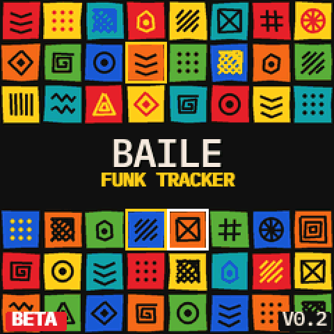
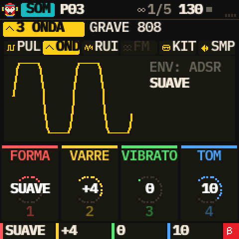
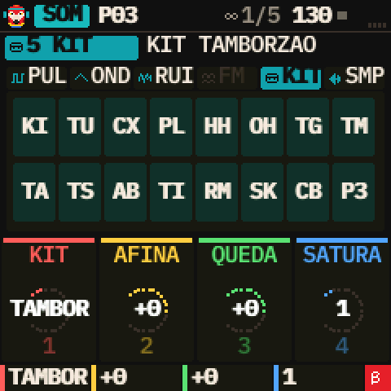
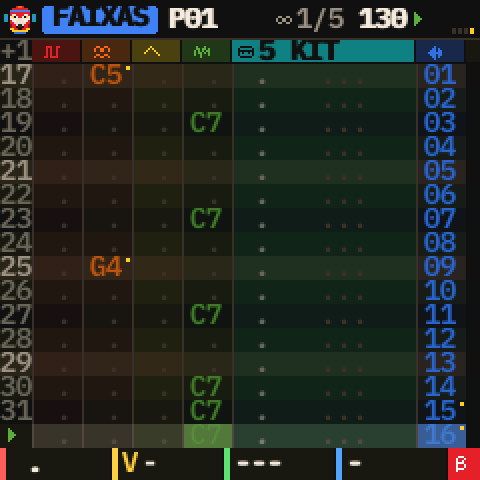

BAILE
BAILE
1. Start

Hold HOME on any page for its help. A yellow bar fills at the bottom of the screen when holding a button is about to open something (HELP, LIVE, TOOLS).
2. The buttons
| Button | What it does |
|---|---|
| HOME | The tracks. Held: the help of the page. HOME + PLAY: panic, everything stops. |
| SEQ | The step grid. OCT− / OCT+: 16, 32 or 64 steps. |
| EDIT | The track's sound: SOUND, SOUND 2, (FM operators / sample edit), EFFECT, TABLE. Again: the next page. |
| LFO | The LFO, then MODULATION. |
| ENV | The ENVELOPE, then MIX (levels, pan, sends, master). |
| FX | SENDS (drive, echo, reverb and DUCK per track: with DUCK, KNOB 4, the track steps back when the kick hits, key 1 or 2 of a kit), LIVE, FILTER, FX SEQ. Held: LIVE while you hold it. |
| SCL | The SCALE, then MAGIC, then back. |
| GLO | The SONG (the chain), the GROOVE, the OPTIONS (theme, language, MIDI clock, font, metronome). |
| SAVE | PROJECTS (it blinks while there are unsaved changes). Held: the tools. OCT− / OCT+ while held: undo / redo. |
| PLAY, REC | Play and stop; record (the keys write at the cursor, or on the beat while it plays). |
| ARP | Not an arpeggiator: the clear and shift key. A tap clears the cell. Held: + SELECT inserts or removes a row, + KNOB 3 / 4 the cell's second effect, + PRESETS the track's engine. |
| Encoder | What it does |
|---|---|
| SELECT | The row; on the EDIT, LFO, ENV, FX and GLO pages, the page. |
| ALGORITHM | The track. On SONG the entry, on GROOVE the step. |
| PRESETS | The factory sound (on the first SOUND page), or the pattern on the others. |
| KNOB 1–4 | The bottom line of the screen says what each does: 1 red, 2 yellow, 3 green, 4 blue. |
3. Tracks, cells and patterns

Each cell holds a note, a volume and up to two effects: ARP (a chord), GLI (glide), VIB, ROL (roll), BND, CHN (chance), DLY (delay), CUT, REV (reverse), PIT (pitch), HOP (to a row), END (ends the pattern)… KNOB 3 and 4 choose the effect and its value; with ARP held, the second effect.

4. The sounds
Each track has an engine: PULSE, WAVE, NOISE, FM (6 operators, one track only), KIT or SAMPLE. On the first EDIT page, PRESETS picks the factory sound; ARP held + PRESETS changes the engine.

| BAILE's sounds | What for |
|---|---|
| 808 BASS | Funk's bass, with punch and glide. |
| BENT 808 | A sawtooth 808, crushed: mandelão. |
| SUB | Only the sub, round. |
| MELODY LEAD | Funk melody's lead, with vibrato and glide. |
| MELODY PIANO | A bright FM piano, for the chords (the ARP effect plays a chord from one note). |
| STAB | A short brass stab. |
| SIREN | A siren on the PULSE engine: hold the note. |
The breaks
A SAMPLE track plays a break cut in 16 slices, one a key: TAMBORZAO, VOLT, FUNK 150, MANDELAO, BREGA FUNK and MONTAGEM (a different sound every 16th, to cut up). All synthesised, none taken from a record. Your own sounds go into MY 1 to 4 with the importer.
5. The 8 kits

| Kit | The drums that make it |
|---|---|
| VOLT | Miami bass's 808: kick, a long BOOM, snare and clap, cowbell, clave, conga, maracas, an orchestra stab. |
| TAMBOR | The tamborzão: a dry kick, the TUM, a dry snare, palms, atabaques low, middle, high, slap and muted, a snare shot. |
| 150 | Short and hard: a dry kick, a distorted PUNCH, a cracking snare, metal, a zap, a snare roll. |
| MANDELA | Blown out: a driven kick, a sub, anvils, the BRUXARIA (a noise that swells), a sweep, crackle, glitch, laser. |
| BREGA | A dry kick and a round one, doubled palms, low and high timbales, cowbell, tambourine. |
| MELODY | The clean drum machine of the 2000s: ride, crash, clave, bell. |
| TUIN | The baile's effects: two sirens, a whistle, the falling TUIN, laser, shot, explosion, vinyl, scratch, the noise that RISES. |
| PERCUS | Brazilian percussion: atabaques, slap, surdo, chocalho, pandeiro, tamborim, snare, agogô, cuíca, reco-reco, triangle, whistle, ganzá. |
6. MAGIC

| Tool | What it does |
|---|---|
| BEAT FUNK | On a kit track, writes that kit's funk (the tamborzão on TAMBOR, the anvil off the beat on MANDELA, doubled palms on BREGA…). Strength adds percussion, hats, ghosts and a roll at the end. |
| BASS 808 | The bassline in funk's 3-3-2, mostly on the root, with octave jumps and glides. |
| CHOPPER | Chops the break: kicks on the beats, the snare on 2 and 4, the rest shuffled. |
| MONTAGE | The montagem: 2 to 4 pieces of the break (or of the kit) repeating in groups, some reversed or pitched. |
| FILL | Rolls at the ends of the beats and, on a kit, a snare fill that speeds up at the end of the bar. |
| MELODY, EUCLID, VARY, ACCENTS | A melody in the scale, a Euclidean rhythm, variations, accents. |
| DOUBLE, SHIFT, CLONE, TRANSP | Doubles the pattern, shifts it a step, clones it into the song, transposes. |
| COPY, PASTE, CLEAR | The track or the whole pattern. |
7. The groove

| Preset | Ticks | The feel |
|---|---|---|
| STRAIGHT | 6 6 | no swing |
| TAMBOR | 6 7 5 6 | the tamborzão's late second 16th |
| BREGA | 7 5 | brega funk's swing |
| 150 | 6 5 7 6 | pushes the second |
| MANDELA | 7 5 6 6 | dragging |
| TRIPLET | 4 4 4 | triplets |
8. Live effects

- STUTTER repeats a sliver (x3, x4) · SCRATCH · BUILDUP the roll that speeds up · REVERSE · LOOP 1/16 to 1/64.
- GATE cuts the sound in rhythm · LOWPASS / HIPASS sweep · TAPE STOP · DIVE · FREEZE.
- BASS+ thickens the lows and adds the harmonics that carry an 808 on a small speaker · ECHO the dotted-8th echo · SIREN a siren over everything · NO MELODY, NO BEAT.
9. The song and the projects
GLO opens the SONG: a list of patterns, each played N times. A white key picks the pattern, KNOB 3 the times, OCT+ adds, OCT− removes. ARP switches LOOP (the pattern on the screen again and again) and SONG (the list).

10. A first tamborzão
- In a new project (SAVE, NEW SONG), track 5 is already the TAMBORZAO KIT and track 3 the 808 BASS.
- Go to track 5 (ALGORITHM), open MAGIC (SCL twice) and tap BEAT FUNK (key 2). Turn KNOB 1 up for more and tap it again.
- Track 3: tap BASS 808 (key 4). The bass comes on the kick's beat.
- Open the GROOVE (GLO twice), pick TAMBOR with KNOB 3 and turn it on with KNOB 4.
- PLAY. Hold FX and play STUTTER, SCRATCH, SIREN.
- On track 5, tap FILL to end the bar. Like it? SAVE, SAVE, OCT+.

11. Help and safety
- Install: from the hub (Chrome, Edge, Opera), with a USB data cable and every other MIDI program closed. Do not unplug during the write; if it is cut, plug the FM-1 back in and click again: it resumes.
- Rescue: if BAILE fails to start twice in a row, the FM-1 opens the USB rescue by itself (or hold OCT− while switching on). Then run the installer again.
- Silence? BAILE starts on an empty song: write notes (REC and the keys) or load a DEMO.
- PRESETS does not change the sound? You edited it (*): the next one is shown in gold, OCT+ loads it.
- A mistake: hold SAVE and press OCT− (undo).
- The click in your recording: the metronome goes into the USB audio too; turn it off in OPTIONS.
- Back to the official firmware: M-VAVE's M-UPGRADE, firmware V15. BAILE's projects are lost. The steps.